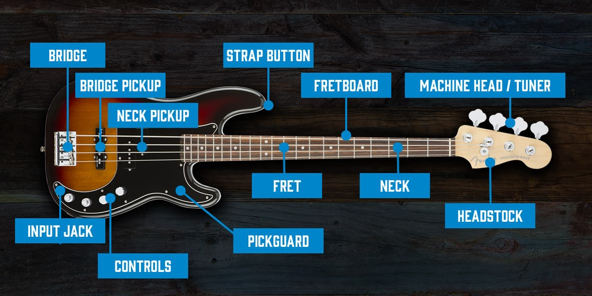
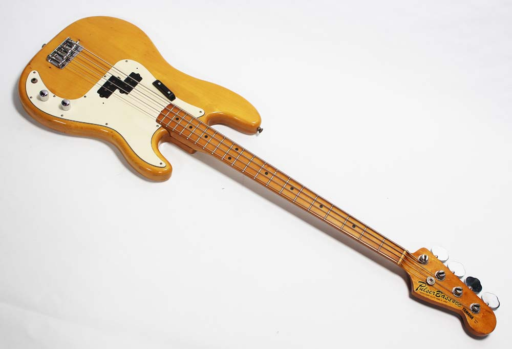
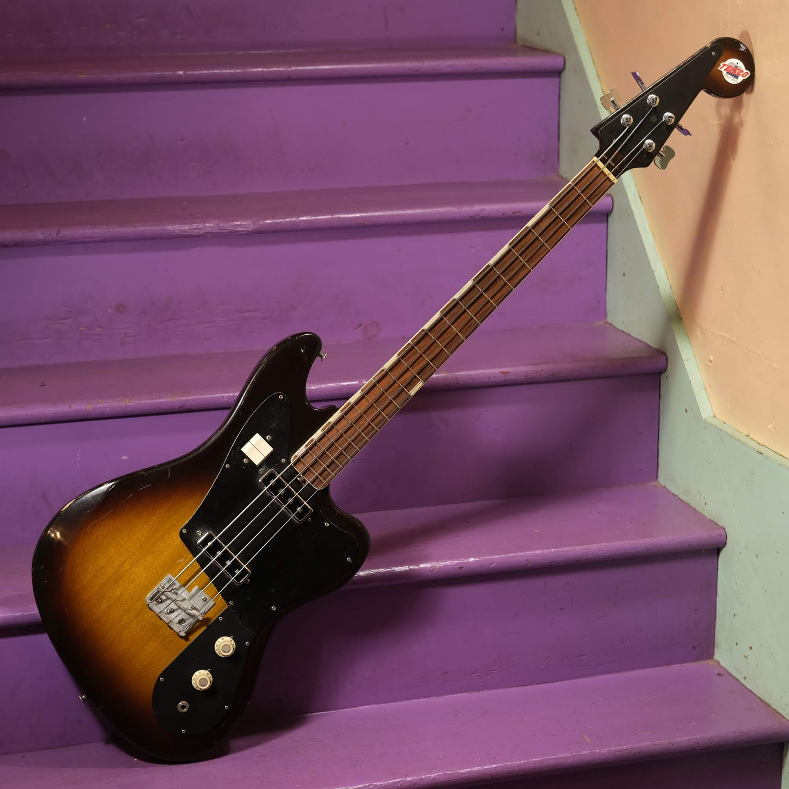
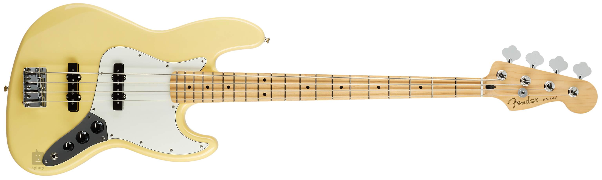
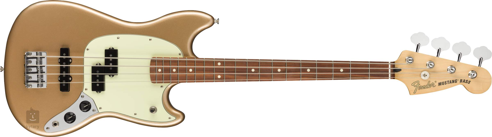
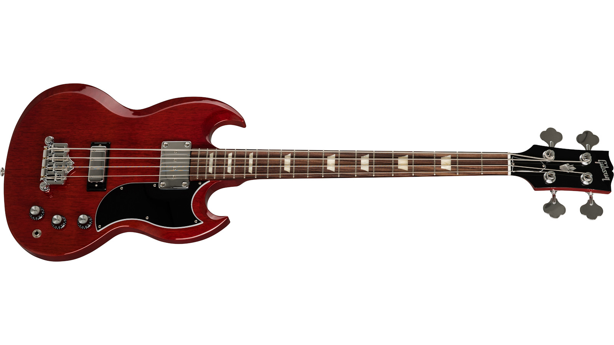
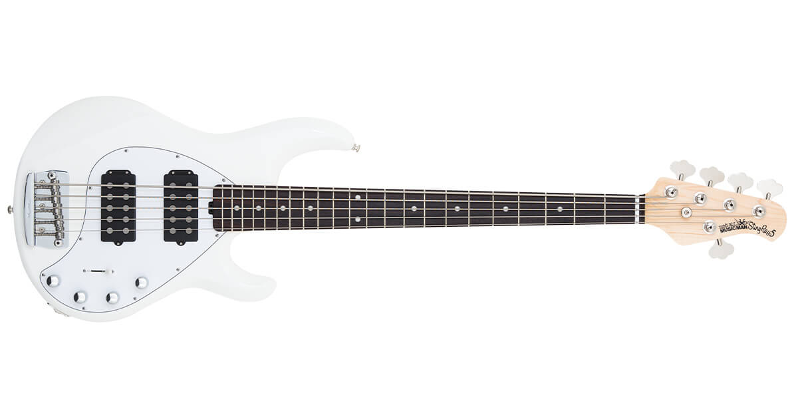

BASSGUITARS
The bass guitar, electric bass or simply bass, is the lowest-pitched member of the guitar family.
It is a plucked string instrument similar in appearance and construction to an electric or an acoustic guitar, but with a longer neck and scale length, and typically four to six strings or courses.
Since the mid-1950s, the bass guitar has largely replaced the double bass in popular music.
The four-string bass is usually tuned the same as the double bass, which corresponds to pitches one octave lower than the four lowest-pitched strings of a guitar (typically E, A, D, and G). It is played primarily with the fingers or thumb, or with a pick.
To be heard at normal performance volumes, electric basses require external amplification.
Bass guitar terminology
According to the New Grove Dictionary of Music and Musicians, an "Electric bass guitar [is] a guitar, usually with four heavy strings tuned E1'–A1'–D2–G2.
It also defines bass as "Bass (iv). A contraction of Double bass or Electric bass guitar."
According to some authors the proper term is "electric bass". Common names for the instrument are "bass guitar", "electric bass guitar", and "electric bass"
Scale
The scale of the bass is located along the length of the string and forms what is known as the fingerboard.
The scale can range in length but is traditionally 34-35 inches long while "short scale" bass guitars are usually between 30-32 inches.
Pickup
Bass pickups are generally attached to the body of the guitar and located beneath the strings.
They often come in a black, rectangular shape and are responsible for translating the physical energy from a person plucking the strings, to electrical energy that is sent to an amplifier to create sound.
There are several different kinds of bass pickups that exist, such as single-coil, double-coil, split coil, piezo, and optical pickups.
Range of a standard tuned 4-string bass guitar (brackets: 5-string)
Anatomy of bass guitar
Bass guitar history
1930s
In the 1930s, musician and inventor Paul Tutmarc of Seattle, Washington, developed the first electric bass guitar in its modern form, a fretted instrument designed to be played horizontally.
1950s
In the 1950s, Leo Fender and George Fullerton developed the first mass-produced electric bass guitar.
The Fender Electric Instrument Manufacturing Company began producing the Precision Bass, or P-Bass.
The Fender Bass was a revolutionary instrument for gigging musicians. In comparison with the large, heavy upright bass, which had been the main bass instrument in popular music from the early 20th century to the 1940s.
In 1953, Monk Montgomery became the first bassist to tour with the Fender bass, in Lionel Hampton's postwar big band. Montgomery was also possibly the first to record with the electric bass, on July 2, 1953, with the Art Farmer Septet.
1960s
With the explosion in popularity of rock music in the 1960s, many more manufacturers began making electric basses, including Yamaha, Teisco and Guyatone.
Introduced in 1960, the Fender Jazz Bass, initially known as the "Deluxe Bass", used a body design known as an offset waist which was first seen on the Jazzmaster guitar in an effort to improve comfort while playing seated. The J-bass features two single-coil pickups.
Providing a more "Gibson-scale" instrument, rather than the 34 inches (864 mm) Jazz and Precision, Fender produced the Mustang Bass, a 30-inch (762 mm) scale-length instrument.
The Fender VI, a 6 string bass, was tuned one octave lower than standard guitar tuning. It was release in 1961.
In the late 1960s, eight-string basses, with four octave paired courses (similar to a 12 string guitar), were introduced. The most well known being the Hagström H8.
1970s
In 1972, Alembic established what became known as "boutique" or "high-end" electric bass guitars.
Alembic also pioneered the use of onboard electronics for pre-amplification and equalization.
In 1974 Music Man Instruments, founded by Tom Walker, Forrest White and Leo Fender, introduced the StingRay, the first widely produced bass with active (powered) electronics built into the instrument.
In the mid-1970s, five-string basses, with a very low "B" string, were introduced.
In 1975, bassist Anthony Jackson commissioned luthier Carl Thompson to build a six-string bass tuned (low to high) B0, E1, A1, D2, G2, C3, adding a low B string and a high C string.
1976 saw the UK company Wal begin production of their own range of active basses.
Fender precision bass
Yamaha pulser 400 precision bass
1960s Teisco EB-200 bass
Fender jazz bass
Fender Mustang bass
Gibson SG standard bass
Fretless, 5 and 6 string bass guitars
Fretless bass guitars
While electric bass guitars are traditionally fretted instruments, fretless bass guitars are used by some players to achieve different tones, as well as playing additional micro tones.
The first commercial fretless bass guitar was the Ampeg AUB-1, introduced in 1966.
5 string bass guitars
The most common type of bass guitar with more than four strings is the five-string bass.
Five-string basses often have a low-B string, extending the instrument's lower range
Five-string basses are normally tuned B-E-A-D-G.
Less commonly, five-string instruments add a high C-string, extending the higher range.
6 string bass guitars
Most commonly, six-string basses add a low B and a high C, extending the range on the low end and the higher register, although other tunings are used.
Six-string basses are normally tuned B0–E1–A1–D2–G2–C3
Stagg BC300FL fretless 4 string bass guitar
StingRay 5 - 5 string bass guitar

Ibanez SR506 - 6 string bass guitar